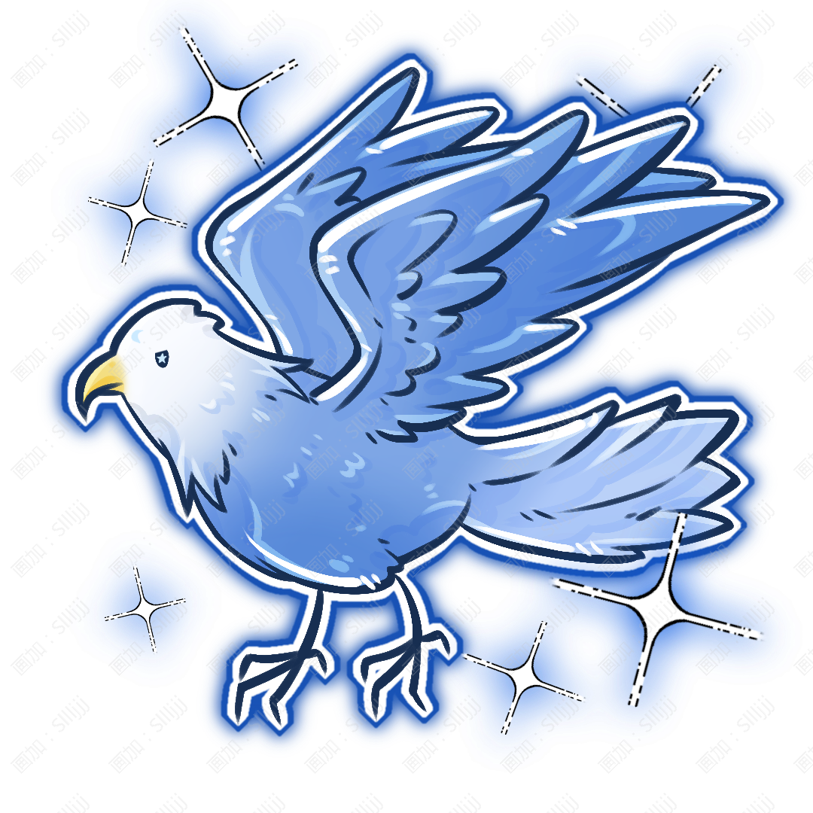

Xuque · Asteria
滸阙·阿斯忒瑞亚

姓名：滸闕·阿斯忒瑞亞。
英文：Xuque · Asteria。
種族：鷹系真裔。
性別：女。
生日：12月21日。
年齡：與寓幽旅行時期重逢時約 16 歲。
出身與現居：出生於艾爾德利亞貴族阿斯忒瑞亞家族；家族消失後居所不定，曾隱藏身份生活在人羣中。
身高：174 cm。
體重：57 kg。
額頭中央有銀白色月亮紋樣，瞳孔中帶有星形紋路，左眼下有一顆淚痣。
整體氣質高貴而沉靜，即使後來隱藏貴族身份、換上普通服飾，也很容易因爲言行舉止顯得不像普通人。
作爲鷹系真裔，她能夠隱藏自己的翅膀與部分真裔特徵。
聰明、驕傲、自信，對自己的能力有非常清楚的認知。
她並不喜歡故意貶低自己來換取別人的好感，也很少說“我只是運氣好”這種話——做得到就是做得到。
因爲從小受到嚴格教育，她對自己和別人都有很高的要求，說話偶爾顯得直接甚至有些傲慢。
但她並不是看不起能力普通的人，真正讓她無法忍受的是明明有能力卻敷衍了事的人。家族消失以後，她變得比過去更加謹慎，也逐漸學會接受並不是所有事情都能夠依靠能力解決。
艾爾德利亞貴族，阿斯忒瑞亞家族唯一的小姐；
家族消失後隱藏身份成爲珠寶鑑定師。世界頂尖綜合學院畢業生；與寓幽同年級。
收藏漂亮卻少見的寶石、觀察月亮、研究珠寶切割方式、整理自己的收藏；
看到別人把珍貴寶石當成普通石頭時會忍不住糾正。
讓聞潮書閣一直存在下去。
古籍鑑定與修復、書閣經營、飾品與靈紋器鑑別、海洋文字與部分古文字。
力量：★★★★☆
體力：★★★☆☆
智慧：★★★★★
魅力：★★★★☆
幸運：★★★★☆
武器：星盤、法杖。
屬性：羽，月。
技能：
「月軌」
滸闕轉動星盤，在周圍留下數道銀白色的月屬性軌跡。她之後釋放的攻擊能夠沿着這些軌跡移動，因此即使目標躲開最初方向，攻擊也可以順着另一條軌跡改變方向繼續追擊。
「羽刃」
將羽屬性集中在自身羽翼或法杖周圍，形成大量薄而鋒利的羽狀屬性片。可以集中向一個方向釋放，也可以讓羽片圍繞身體旋轉，用於擋開靠近自己的攻擊。
「星盤」
滸闕將星盤展開，記錄短時間內周圍目標經過的位置與移動方向。星盤不會直接告訴她未來，卻能將剛剛發生過的移動軌跡全部保留下來。她會根據這些軌跡自己判斷對方下一步最可能出現的位置。因此這個能力真正依賴的並不是星盤，而是滸闕本人的觀察力與判斷能力。
大招「月隕」
滸闕將星盤升至空中，展開巨大的銀白色圓環。大量由羽屬性形成的羽片圍繞圓環旋轉，並被月屬性逐漸照亮。她可以利用星盤記錄下來的行動軌跡調整羽片落下的位置，使攻擊不斷跟隨目標移動。最後，所有月屬性軌跡同時亮起，剩餘羽片沿着不同軌跡從多個方向集中落下。
特殊能力：作爲鷹系真裔，滸闕擁有極強的遠距離視力與動態觀察能力。她能夠在高空中看清地面上的細小目標，也很容易發現寶石表面的微小裂紋、切割誤差與人工處理痕跡。這也是她後來能夠成爲優秀珠寶鑑定師的重要原因之一。
血脈特徵：擁有銀藍色鷹翼，可以自由隱藏。展開翅膀後擁有極強的高空移動與俯衝能力，但在狹窄室內行動會受到一定限
皎羽。
種類：鷹類靈獸。
屬性：風。
皎羽是一隻體型較大的鷹類靈獸，羽毛整體呈深灰色，翅膀外緣與尾羽則接近銀白色，眼睛爲淺金色。
它並不是阿斯忒瑞亞家族替滸闕準備的靈獸。
家族出事以後，滸闕曾獨自在不同城市之間移動。某一天，她在野外發現了翅膀受傷的皎羽。
她原本只替它處理了傷口，並沒有打算留下它。傷好以後，皎羽也確實飛走了。
結果第二天，它又出現在她住處的窗外。滸闕把它趕走。
第三天，它又來了。換了一座城市以後，它還是跟來了。
最後滸闕終於放棄糾正這件事。
它和滸闕一樣有些高傲，不太喜歡陌生人碰自己，卻很習慣停在她附近較高的位置。滸闕工作時，它經常站在屋頂、窗框或附近高處觀察周圍。
滸闕絕對不會承認自己已經把皎羽當成家人。但她後來給它買的東西越來越多。
能力：
「巡空」：皎羽飛至高空觀察周圍，並通過叫聲與動作向滸闕提醒異常目標。鷹類靈獸本身優秀的視力使它非常適合偵察。
「風羽」：俯衝時利用風屬性改變周圍氣流，可以干擾飛行物的方向，也能在滸闕進行空中移動時幫助她調整速度與方向。